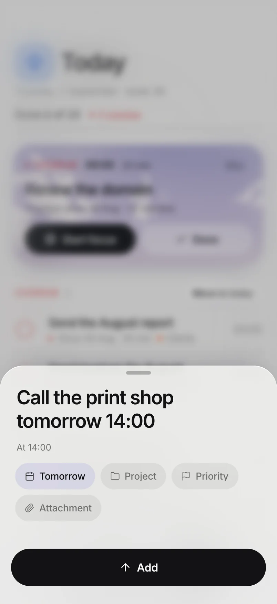
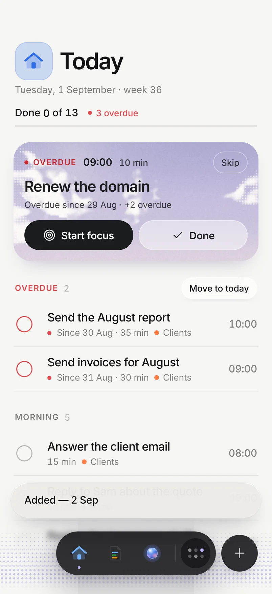
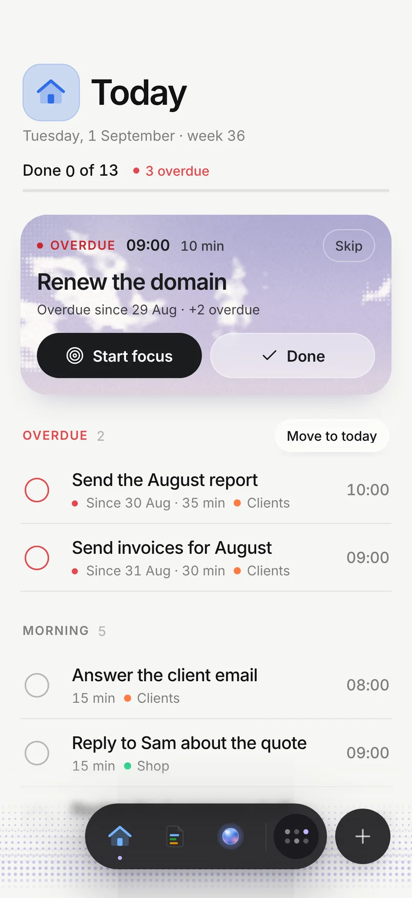
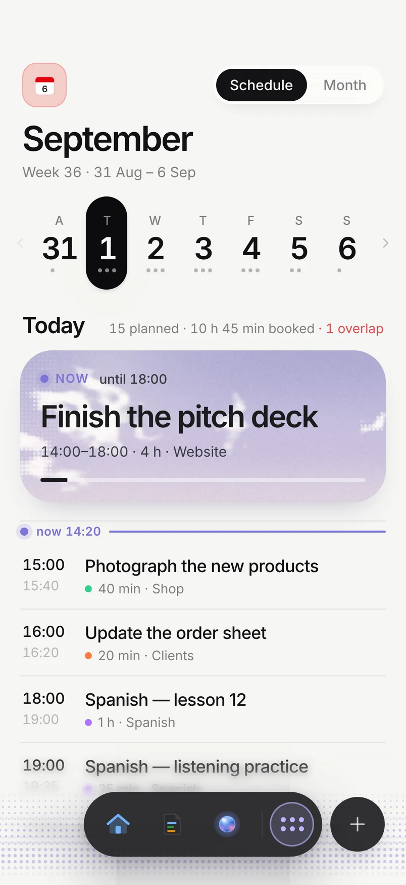
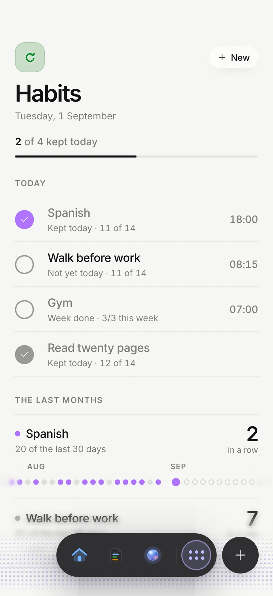
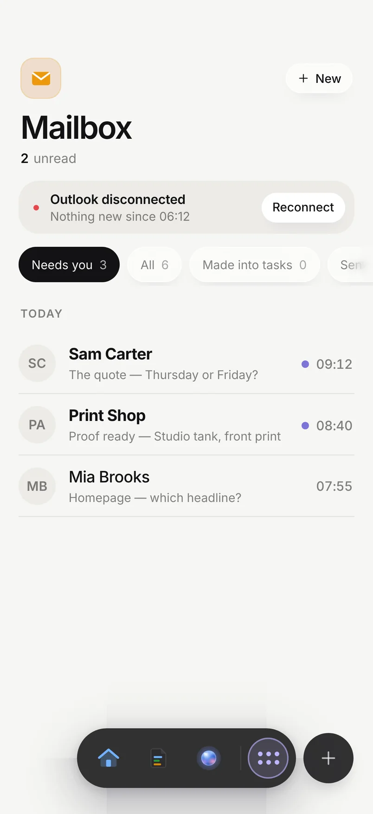
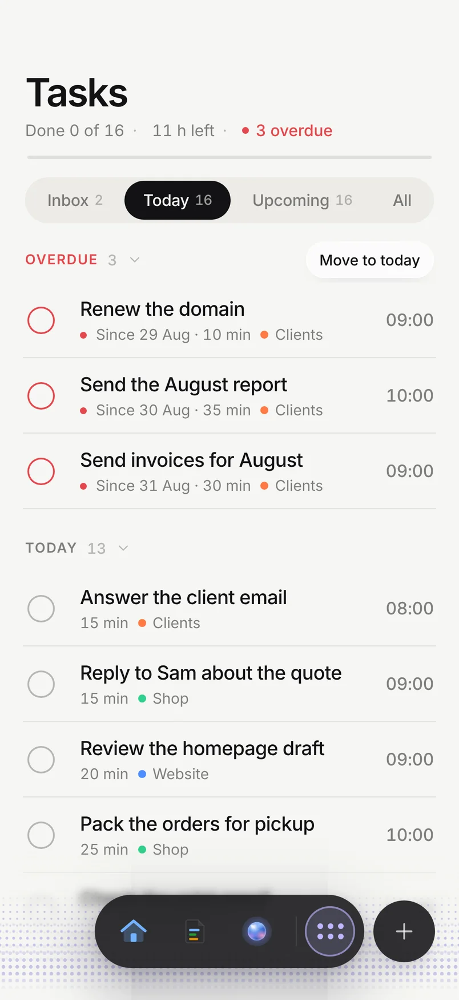

Seven skills. One sharper AI.
A business partner, a researcher, a prompt builder, a grill-me and a critic — free on GitHub and in the Claude Code and Codex marketplaces. The main /needt skill runs your day inside Needt, on Pro.







Real Needt screens. The /needt skill calls Needt’s own tools over MCP — the same ones the app uses.
Six free. One that runs Needt.
Install from GitHub, your AI’s plugin marketplace or the file. Every skill checks the setup line first and works on its own.
/needtThe main skill. Tasks, calendar, habits, pages, mail into tasks and memory. Starts on its own when you say “add”, “remind me”, “what’s today”, “move”, “done” — in six languages.
Pro/needt:partnerBusiness partner. Reads your real numbers, finds the better move, does the work — and calls the other skills itself. Money ends in a verdict: take, take if X, walk.
Free/needt:searchResearch. Web, YouTube transcripts, X and GitHub. Opens with the Find — the non-obvious thing — and dates every source.
Free/needt:promptPrompt builder. A rough wish becomes one prompt of the right size, with stages that use the other skills.
Free/needt:askingGrill-me. Clickable questions in rounds until nothing is assumed; a short mode for the other skills.
Free/needt:criticCritic. Takes a plan apart before launch: problem → fix → cost → confidence, then the fixed plan.
Free/needt:setupSetup. The Needt · readiness line, tool onboarding on first run, and reading your memory.
/needt needs Needt Pro: it connects to your account over MCP. The other six work without an account.
/needtPro
Say it. Needt does it.
The main skill gives your AI the whole app: it reads your day, writes tasks, moves blocks and keeps habits — and you don’t need to call it. It starts when you talk like you would to a person.
- Tasks and calendar. Add, move, finish, and see what’s today across every calendar.
- Habits and pages. Log a habit, append to a page, start a doc.
- Mail into tasks. Turn an email into a task linked back to it.
- Memory. Remembers how you plan and what you decided.
/needt:partnerFree
Thinks with you. Does the work.
One loop: your situation → the real question → the best of two or three moves → the work itself → tasks in Needt.
- Reads your real numbers from whatever your AI is connected to — payments, store, analytics, mail, GitHub — and quotes the two figures that matter.
- Calls the other skills itself: facts → search, open choices → asking, a plan → critic, an agent to brief → prompt, tasks → needt. You never name them.
- 2–4 ideas, not 20, each tied to something it saw, with a first step and its cost. Guesses are labelled.
- Money in calculated numbers with a downside case and a verdict: take, take if X, walk.
- Plans you can start today: first step, order, what runs in parallel, what you decide, what an agent does.
- Writes only reversible things you asked for. Sending, paying or deleting waits for your yes.
/needt:searchFree
Finds the good option, not the first one.
Starts from your context and looks at the question the way maintainers, people who switched away, competitors and users would.
- Wide first, many short parallel queries, then deep on the leads.
- Web, YouTube transcripts, X and GitHub — plus docs, forums and changelogs.
- Opens with the answer and the Find: the non-obvious thing worth knowing.
- Every fact has a link and a date; money and dependencies need two sources.
/needt:promptFree
A rough wish in. One prompt out.
Thinks first: two or three approaches, picks the strongest and adds the ideas you didn’t ask for.
- At most one round of up to 4 questions — only when the answer changes the prompt.
- Sized to the task: S a few lines, M short sections, L an XML brief for an agent.
- Writes stages that use the other skills; for ChatGPT, Grok or Gemini it writes plain instructions instead.
- Improves a prompt you have and shows the 2–4 changes that matter.
Goal A one-page site for a neighbourhood bakery that turns visitors into pre-orders. Stage 1 use needt:search to find 5 local bakery sites and their bread prices, with links and dates. Stage 2 draft the page: hero, today’s bakes, pre-order form, opening hours. Assumption pickup only, no delivery.
/needt:askingFree
Your plan, grilled.
Maps the plan as a tree of decisions and asks them in rounds of up to four clickable questions, recommended answer first.
- Keeps going until nothing is silently assumed.
- A short one-round mode that prompt and search use to clarify a task.
- Adapted from Matt Pocock’s grill-me skill (MIT).
/needt:criticFree
Breaks it before launch.
Reads a plan the way the market will: finds what fails, prices the fix and says how sure it is.
- Each issue as problem → fix → cost → confidence.
- Ends with the corrected plan, not a list of worries.
- Hands money questions to partner and missing facts to search.
/needt:setupFree
Ready in ten seconds.
Checks the project, your tone and which tools are really there, then prints one line every skill looks for.
- The Needt · readiness line, printed once per conversation.
- Onboards your tools on first run: search, questions, connectors.
- Reads your memory so the skills start from what you already decided.
Needt · bakery-site · search: web+yt+x+gh · questions: clickable · ready
Two minutes, any AI.
Open source on GitHub. The plugin lives in plugins/needt.
Claude Code
Add the marketplace, then install.
claude plugin marketplace add teenxgrailed/needt-plugin
claude plugin install needt@needtCodex
Add the marketplace from the same repo.
codex plugin marketplace add teenxgrailed/needt-pluginClaude app
Download needt.plugin, then Customize → Plugins → Upload. Type /needt: to see the skills.
Cursor and other MCP clients
For /needt (Pro): add the Needt server.
https://mcp.needt.app/mcpAre the skills really free?
Yes — partner, search, prompt, asking, critic and setup are free, with no account. Only the main /needt skill needs Needt Pro, because it works inside your Needt account.
What does /needt do that the others don’t?
It connects your AI to Needt over MCP, so it can read and change your tasks, calendar, habits, pages and memory. It starts on its own when you say things like “add”, “remind me”, “what’s today”, “move” or “done”.
Does it connect any accounts or send data?
The free skills connect nothing and send nothing — no telemetry. /needt talks only to your own Needt account, and only after you connect it.
Which AI apps does it work in?
Claude Code and Codex install it from the GitHub marketplace; the Claude app takes the .plugin file. /needt also works in Cursor and any MCP client through https://mcp.needt.app/mcp.
Does it work in my language?
Yes. The skills answer in the language you write in; /needt understands its trigger words in six languages.